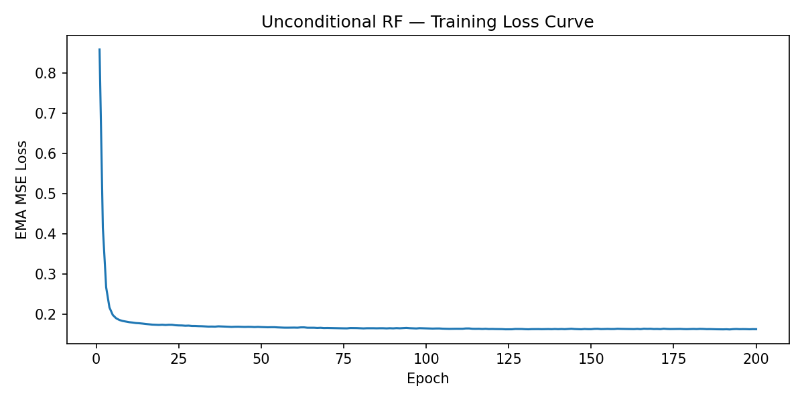
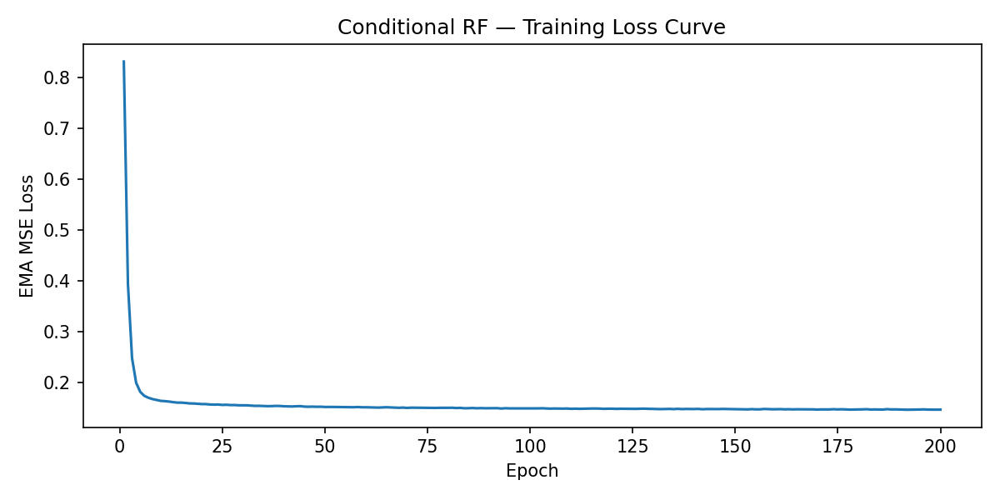
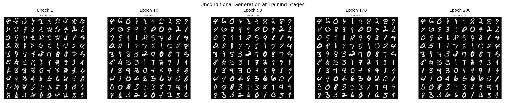
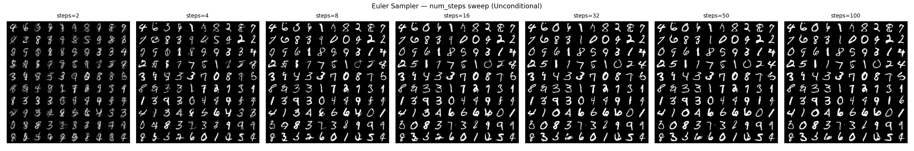
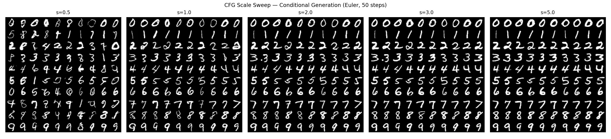
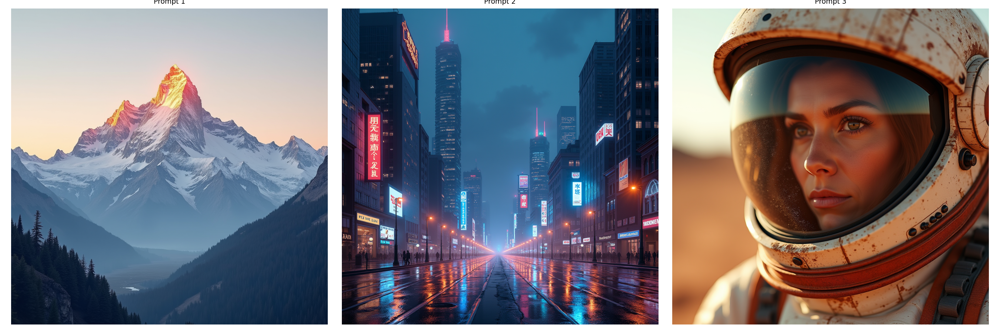
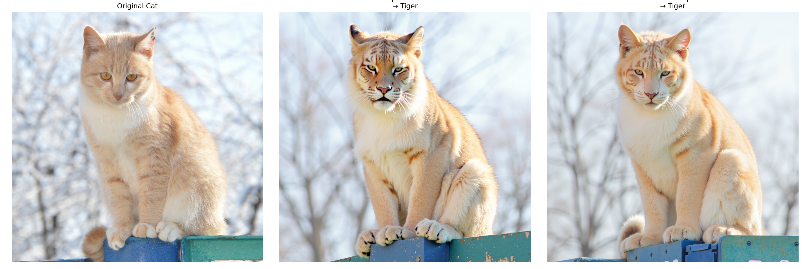

Rectified Flow (RF) defines a straight-line transport between a source distribution X0 ~ N(0,I) and a target data distribution X1 ~ q:
Xt = t · X1 + (1−t) · X0, t ∈ [0,1]
A neural network vθ is trained to regress the constant velocity X1 − X0 along each trajectory. Because the paths are straight, first-order Euler integration is highly accurate even with very few steps — a key advantage over score-based diffusion models.
We explore RF at two scales: a lightweight UNet trained from scratch on MNIST (28×28 grayscale), and FLUX.1-dev, a ~12B-parameter Diffusion Transformer producing 1024×1024 images.
MNIST digit generation
We train a SongUNet on 60,000 MNIST images for 200 epochs, exploring unconditional and class-conditional generation, sampling efficiency, and classifier-free guidance.
Training convergence
Both unconditional and conditional models converge rapidly. The loss drops from ~0.85 to ~0.18 in the first 10 epochs, then slowly plateaus near 0.16–0.17 by epoch 200. The conditional model (label_dropout = 0.1) achieves a slightly lower final loss.


Generation quality across training stages
Snapshots taken at fixed noise using the Euler sampler (50 steps) show a clear progression from noisy blobs at epoch 1 to sharp, consistent digits by epoch 50–100.

Effect of sampling steps
We sweep the Euler sampler from 2 to 100 steps, keeping the noise seed fixed. Quality saturates quickly — beyond 16 steps, results are visually indistinguishable.

2–4 steps: Severe blurring and distortion from large discretization error.
8 steps: Digits become recognizable; minor stroke inconsistencies remain.
16+ steps: Visually converged. RF's straight paths make Euler highly accurate.
Classifier-free guidance (CFG)
The conditional model is trained with 10% label dropout, enabling CFG at inference. The guided velocity is:
vCFGt(x) = vt(x, ∅) + s · (vt(x, y) − vt(x, ∅))
Higher guidance scale s amplifies the conditional direction, increasing class fidelity at the cost of intra-class diversity.

| CFG scale s | Class fidelity | Intra-class diversity | Character |
|---|---|---|---|
| 0.5 | Low | High | Mixed class identities per row |
| 1.0 | Good | Moderate | Correct class, some style variation |
| 2.0–3.0 | High | Low | Consistent, sharp — recommended range |
| 5.0 | Very high | Very low | Near-identical samples — mode collapse |
Text-to-image inference with FLUX.1-dev
FLUX.1-dev is a ~12B-parameter Diffusion Transformer trained under the rectified flow framework, producing 1024×1024 images. We explore sampler behavior, the num_steps–quality trade-off, CFG at image scale, and image editing.
Image generation — three prompts
Euler sampler, 28 steps, CFG s = 3.5. FLUX produces high-fidelity images with strong prompt adherence across diverse scene types.

Sampler comparison — Euler vs SDE across num_steps
We compare the deterministic Euler sampler with the stochastic SDE sampler (noise_scale = 2.0) across num_steps ∈ {4, 8, 16, 28}.

4–8 steps: Both samplers produce incoherent outputs. SDE's additional noise further degrades quality at low step counts.
16 steps: Structure and text partially emerge. SDE shows slight texture variation.
28 steps: Both converge to sharp, coherent images. SDE produces marginally richer texture from stochastic exploration.
CFG scale sweep
At image scale, CFG effects are visually pronounced. We sweep s ∈ {1.0, 2.0, 3.5, 7.5, 10.0}.
| CFG scale s | Prompt adherence | Quality | Artifact risk |
|---|---|---|---|
| 1.0 | Weak — text absent | Low contrast | None |
| 2.0 | Improving | Good | None |
| 3.5 (default) | Strong | Excellent | None |
| 7.5 | Very strong | Oversaturated | Moderate |
| 10.0 | Extreme | Degraded | High |
Image editing with FLUX
We explore two editing paradigms: simple renoising and soft interpolation editing, which blends analytic Gaussian velocity with the learned velocity field.
Method 1 — simple renoising
Given image latent X1, form a noisy interpolate at time t = 0.12:
Xt = t · X1 + (1−t) · ε, ε ~ N(0,I)
Then run the Euler sampler from Xt with the edit prompt. Works well for structurally similar edits (cat → tiger) but struggles with large semantic changes.
Method 2 — soft interpolation editing
Replace the velocity field with a time-varying convex combination:
ṽθ(Xt, t) = η(t) · vanalytic(Xt, t) + (1−η(t)) · vθ(Xt, t)
The analytic velocity anchors the trajectory toward the source image at early steps. η(t) decays exponentially over [tstart, tend], then drops to zero — letting the learned velocity drive the edit at later steps. This preserves source structure while enabling large appearance changes.

Parameter exploration on custom image
We vary tend, ηbase, noise scale, and sampler type to control the edit strength vs. source fidelity trade-off.

| Config | tend | ηbase | Noise scale | Sampler | Effect |
|---|---|---|---|---|---|
| Tiger | 0.25 | 0.93 | — | Euler | Strong source fidelity |
| Lion | 0.25 | 0.93 | 2.0 | SDE | Similar structure, richer texture |
| Silver statue | 0.20 | 0.85 | 5.0 | SDE | Larger appearance change |
| Spacesuit | 0.15 | 0.80 | 10.0 | SDE | Dramatic edit, lower fidelity |
Smaller tend and ηbase allow the learned velocity to dominate earlier, enabling more dramatic edits at the cost of source fidelity.
Higher SDE noise scale introduces diversity and bridges large appearance gaps, but risks spatial incoherence at very high values.
Euler preserves source structure most faithfully. SDE with moderate noise (2–5) offers a useful middle ground.
What we learned
RF's training objective produces near-straight transport paths. 16 steps on MNIST and 28 steps on FLUX are sufficient for high-quality results — far fewer than diffusion models require.
At both scales, s = 2–3.5 is the practical sweet spot. Below that, class/prompt adherence is weak. Above ~7, oversaturation and mode collapse emerge regardless of model size.
The stochastic sampler does not improve sharpness over Euler at sufficient steps. It adds texture variation and, in editing, helps bridge large semantic gaps.
The soft interpolation framework gives precise control over source fidelity vs. edit strength via the η(t) schedule. Simple renoising is sufficient only for small structural changes.